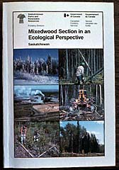 Managing Saskatchewan's seven million hectares of productive commercial forest lands for increased timber values is a large undertaking. Today's forest managers are challenged to utilize and renew timber resources efficiently, while accommodating a proliferation of other valid forest uses. |
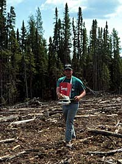 With the introduction of the Forest Management Licence Agreement System and the earmarking of funding for forest renewal, Saskatchewan has entered a new era in the province's forest management history. Through these initiatives, forest renewal costs have to a large degree been transferred from government to those who benefit directly from timber harvest. |
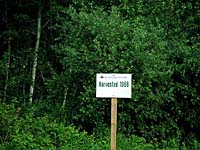 As with any resource, the timber management cycle begins with inventory. The two main functions of an effective inventory are to provide a detailed description of the resource and a comprehensive understanding of how it will change with the passage of time. |
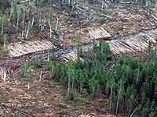 In order to satisfy the need for a primary accounting of commercial forest stock, Saskatchewan Parks, Recreation and Culture (SPRC) commissions 9 000 square kilometres of aerial surveys annually. The aerial photographs from these surveys are interpreted with the assistance of ground survey information. Updated maps are then produced portraying the species composition, age, forest cover density, height class, soil drainage and texture characteristics, and other geographic features. |
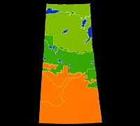 In Saskatchewan, the recent purchase and installation of a computerized Geographic Information System (GIS), funded by the Canada-Saskatchewan Forest Resource Development Agreement, dramatically improved the science of displaying, analyzing and monitoring forest growth patterns. |
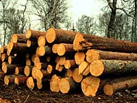 Timber managers are able to project the effects of harvest plan options and determine their long-term consequences. Harvest volume schedules are calculated to establish harvest levels for the province's major Forest Management Licence Agreements (FMLA) and other timber supply areas. |
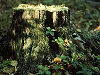 In Saskatchewan, FMLA holders are required to submit twenty year management plans and five year operating plans. Annual operating plans are approved only after other forest resource concerns are examined and addressed. |
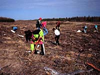 Another promising feature of Saskatchewan's FMLA system is the establishment of a reforestation trust fund, managed by the FMLA holder. Fees are paid to the fund by all forest operators in the FMLA area at rates prescribed in the license agreement. Ensuring adequate forest renewal activities, the fund may be used only for forest management projects. |
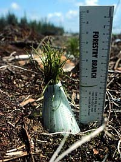 The implementation of the FMLA system has brought about a profound change in the relationship between forest companies and the provincial government. Although harvest operations are still inspected by SPRC to ensure utilization standards and environmental concerns are satisfied, the provincial role has shifted toward cooperative management of the resource. Major industry harvest plans, forest road proposals and forest management plans are evaluated and monitored during harvest operations. As well, harvest opportunities are identified and made available to small forest operators. |

Harvest plans incorporate the salvage of insect and disease ridden areas. In this way, harvesting is used to combat spruce budworm, mountain pine beetle and dwarf mistletoe infestations. Following harvest, regeneration surveys are undertaken to determine which areas will reforest naturally and which will require human intervention. The timber management cycle is complete only when harvested areas or those damaged by fire or pests have been reforested. |
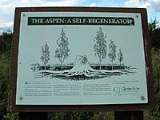 In Saskatchewan, the high natural regeneration potential of trembling aspen, a prolific hardwood species, and its growing commercial importance, are expected to have a strong influence on future renewal programs. Once regarded as a weed species, aspen is now viewed as a suitable replacement crop on many sites. |

To regenerate softwood species such as white spruce, jack pine and black spruce, more human intervention is often required. In some instances, using specialized equipment to expose mineral soil, in a process known as scarification, fosters adequate regeneration. |
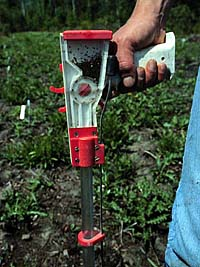 Where sufficient seed is not present following harvest or fire, direct seeding or planting may be required. Seeds for these projects are extracted from cones collected throughout the commercial forest and stored at forest nurseries. This seed is then used for direct seeding or to produce seedlings. |
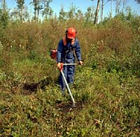 After replacement forests are established, young stands may be thinned or weeded to decrease competition for nutrients, sunlight and moisture. Fertilization is also an option. Before stands mature, a final commercially profitable thinning may be undertaken to increase wood values at harvest. |
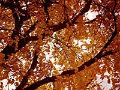 Properly managed and protected from fire, disease and pests, Saskatchewan's forests can continue to produce an abundance of wood products and forest employment while preserving or enhancing wildlife, fisheries, watersheds and high use recreation areas. The key to maximizing the benefits of timber and other forest resources now and into the 21st century is sound forest management. |